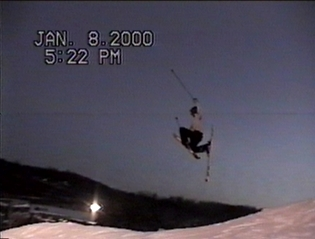

How to Huntony
I think that this is one of the coolest grabs in the world. If you do it right it alone has lots of style. It also is a little bit of a harder grab. More steps.
The Steps:
1) Hit the jump.
2)Bring grab leg up.
3)Move you grab hand down and other hand up
4)Grab your ski (Grab)-Hand to Opposite ski infront
of binding and pull it over (like mute).
5)Do a Back scracher with the other un-grabed leg.
6)Let go of it all
7)Land
Tweaking:
Pretty much allready tweaked out. For even more tweak rest you grabed
ski lat against you other leg. The kick you other leg all the way to you
back.
Picture:
